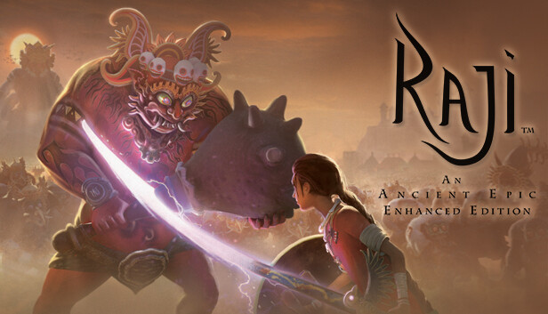

1.) Raaji:An Ancient Epic

On 16 April 2024 the game was released on the PlayStation Plus catalog in a new version for the PlayStation 5 which features graphic enhancements,
raytracing, a Platinum Trophy and haptic feedback, lightbar and adaptive triggers for the DualSense Controller.[5]The game incorporates Hindu mythology
and takes inspiration from epics such as the Mahabharata and Ramayana. Graphically, the game is designed in the style of Pahari paintings, and the in-game
architecture is modeled after that of medieval Rajasthan.